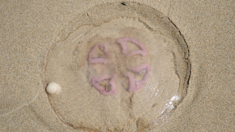
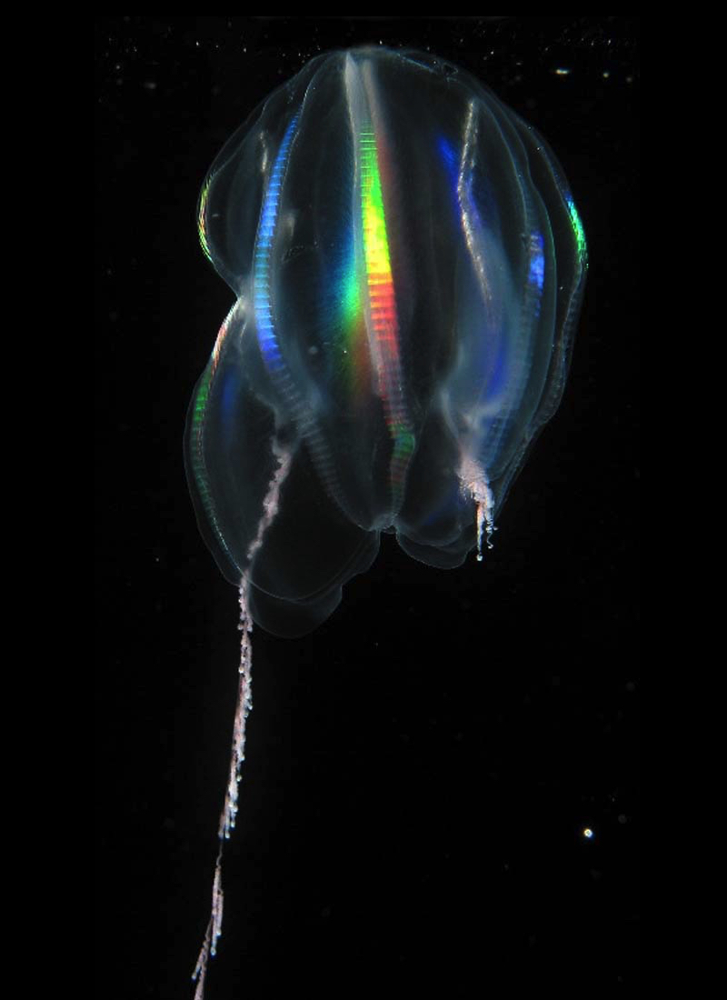

How to Eat a Jellyfish
Did you know there are amazing ways to eat a jellyfish!?
This article will share the secrets of the delicious jellyfish with you,
so you can take the family out to the tidepools for some good ol' fashion seafood.
First off, there are several jelly delicacies floating out there:
- The man o'war are a spicy kick straight from the land of the Portuguese

- Moon Jellyfish are out of this world!

- Lagoon Jellyfish, for something a little more sour

- Lions Mane Jelly pack a big bite

- Sea Nettle the ocean's italian pasta

- Box Jelly the original flavor to DIE for...no seriously...

- Blubber Jelly are just more to love

- Comb Jelly really light up your meals!

- Jello-fish
These classic snacks come in a cup! All you need is a
spoon and choose your favorite flavor!
- Peanut Butter and Jellyfish Sandwhich
An iconic orginal, nothing more healthy and filling than
throwing your favorite jelly onto some white or wheat!
- Jelly-Bean-Fish
What flavor will you get? Ready to spin the chamber borris? A real
Russian Roulette of taste, will be a harmless Moon Jelly?
Or a deadly Man O' War? Time to spin the chamber Borris.
- Classic Jelly
Eat it straight from the water! The beautiful thing about these critters
is they don't put up much of a fight. So get you a bag of sugar or enjoy them
fresh out of the water and see for yourself how the salt/sweet flavors blend
perfectly!
Of course there are many more ways to enjoy a jellyfish (jelly kabobs, jelly filled chocolates etc.)
and so we hope that this list gave you an idea of your next ocean treat. Remember, these animals can be
deadly and we don't recommend eating them, you could literally die! Some of us are dying to try these animals
and I mean literally (crazy that doesn't seem to stop them). So what are you waiting for? The risks lol?